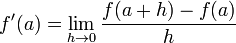

Homework 3
Due at 11:59:59 pm on Thursday, 9/22/2022.
Instructions
Download hw03.zip. Inside the archive, you will find starter files for the questions in this homework, along with a copy of the OK autograder.
Submission: When you are done, submit with python3 ok --submit. You may submit more than once before the deadline; only the final submission will be scored. Check that you have successfully submitted your code on okpy.org.
Readings: This homework relies on following references:
Lists Review
Question 1: Adding matrices
Write a function that adds two matrices together using list comprehensions. The function should take in two 2D lists of the same dimensions. Try to implement this in one line!
def add_matrices(x, y):
"""
>>> matrix1 = [[1, 3],
... [2, 0]]
>>> matrix2 = [[-3, 0],
... [1, 2]]
>>> add_matrices(matrix1, matrix2)
[[-2, 3], [3, 2]]
>>> matrix4 = [[ 1, -2, 3],
... [-4, 5, -6]]
>>> matrix5 = [[-1, 2, -3],
... [ 4, -5, 6]]
>>> add_matrices(matrix4, matrix5)
[[0, 0, 0], [0, 0, 0]]
"""
"*** YOUR CODE HERE ***"
Use OK to test your code:
python3 ok -q add_matricesHigher Order Functions
Question 2: Mul_by_num
Using higher order functions, complete the mul_by_num function. This
function should take an argument and return a one argument function
that multiplies any value passed to it by the original number.
def mul_by_num(factor):
"""
Returns a function that takes one argument and
returns the product of factor and that argument.
>>> x = mul_by_num(5)
>>> y = mul_by_num(2)
>>> x(3)
15
>>> y(-4)
-8
"""
"*** YOUR CODE HERE ***"
Use OK to test your code:
python3 ok -q mul_by_numQuestion 3: This Question is so Derivative
Define a function make_derivative that returns a function: the derivative of a
function f. Assuming that f is a single-variable mathematical function, its
derivative will also be a single-variable function. When called with a number
a, the derivative will estimate the slope of f at point (a, f(a)).
Recall that the formula for finding the derivative of f at point a is:

where h approaches 0. We will approximate the derivative by choosing a very
small value for h. The closer h is to 0, the better the estimate of the
derivative will be.
def make_derivative(f):
"""Returns a function that approximates the derivative of f.
Recall that f'(a) = (f(a + h) - f(a)) / h as h approaches 0. We will
approximate the derivative by choosing a very small value for h.
>>> def square(x):
... # equivalent to: square = lambda x: x*x
... return x*x
>>> derivative = make_derivative(square)
>>> result = derivative(3)
>>> round(result, 3) # approximately 2*3
6.0
"""
h=0.00001
"*** YOUR CODE HERE ***"Use OK to test your code:
python3 ok -q make_derivativeQuestion 4: Count van Count
Consider the following implementations of count_factors and count_primes:
def count_factors(n):
"""Return the number of positive factors that n has."""
i, count = 1, 0
while i <= n:
if n % i == 0:
count += 1
i += 1
return count
def count_primes(n):
"""Return the number of prime numbers up to and including n."""
i, count = 1, 0
while i <= n:
if is_prime(i):
count += 1
i += 1
return count
def is_prime(n):
return count_factors(n) == 2 # only factors are 1 and nThe implementations look quite similar! Generalize this logic by writing a
function count_cond, which takes in a two-argument predicate function mystery_function(n,
i). count_cond returns a count of all the numbers from 1 to n that satisfy
mystery_function.
Note: A predicate function is a function that returns a boolean (True or False).
def count_cond(mystery_function, n):
"""
>>> def divisible(n, i):
... return n % i == 0
>>> count_cond(divisible, 2) # 1, 2
2
>>> count_cond(divisible, 4) # 1, 2, 4
3
>>> count_cond(divisible, 12) # 1, 2, 3, 4, 6, 12
6
>>> def is_prime(n, i):
... return count_cond(divisible, i) == 2
>>> count_cond(is_prime, 2) # 2
1
>>> count_cond(is_prime, 3) # 2, 3
2
>>> count_cond(is_prime, 4) # 2, 3
2
>>> count_cond(is_prime, 5) # 2, 3, 5
3
>>> count_cond(is_prime, 20) # 2, 3, 5, 7, 11, 13, 17, 19
8
"""
"*** YOUR CODE HERE ***"
Use OK to test your code:
python3 ok -q count_condQuestion 5: I Heard You Liked Functions...
Define a function cycle that takes in three functions f1, f2,
f3, as arguments. cycle will return another function that should
take in an integer argument n and return another function. That
final function should take in an argument x and cycle through
applying f1, f2, and f3 to x, depending on what n
was. Here's the what the final function should do to x for a few
values of n:
n = 0, returnxn = 1, applyf1tox, or returnf1(x)n = 2, applyf1toxand thenf2to the result of that, or returnf2(f1(x))n = 3, applyf1tox,f2to the result of applyingf1, and thenf3to the result of applyingf2, orf3(f2(f1(x)))n = 4, start the cycle again applyingf1, thenf2, thenf3, thenf1again, orf1(f3(f2(f1(x))))- And so forth.
Hint: most of the work goes inside the most nested function.
Hint 2: given n, how many function calls are made on x?
Hint 3: for help with how to cycle through the
functions (i.e., how to go back to applying f1 as your outermost
function call when n = 4), consider looking at
this python tutor demo
which has similar cycling behaviour.
def cycle(f1, f2, f3):
""" Returns a function that is itself a higher order function
>>> def add1(x):
... return x + 1
>>> def times2(x):
... return x * 2
>>> def add3(x):
... return x + 3
>>> my_cycle = cycle(add1, times2, add3)
>>> identity = my_cycle(0)
>>> identity(5)
5
>>> add_one_then_double = my_cycle(2)
>>> add_one_then_double(1)
4
>>> do_all_functions = my_cycle(3)
>>> do_all_functions(2)
9
>>> do_more_than_a_cycle = my_cycle(4)
>>> do_more_than_a_cycle(2)
10
>>> do_two_cycles = my_cycle(6)
>>> do_two_cycles(1)
19
"""
"*** YOUR CODE HERE ***"Use OK to test your code:
python3 ok -q cycleQuestion 6: The Word Guessing Game
Write a higher order function called store_word that takes in a secret word. It will return the length of the secret word and another function, guess_word, that the user can use to try to guess the secret word.
Assume that when the user tries to guess the secret word, they will only guess words that are equal in length to the secret word. The user can pass their guess into the guess_word function, and it will return a list where every element in the list is a boolean, True or False, indicating whether the letter at that index matches the letter in the secret word!
def store_word(secret):
"""
>>> word_len, guess_word = store_word("cake")
>>> word_len
4
>>> guess_word("corn")
[True, False, False, False]
>>> guess_word("come")
[True, False, False, True]
>>> guess_word("cake")
[True, True, True, True]
>>> word_len, guess_word = store_word("pop")
>>> word_len
3
>>> guess_word("ate")
[False, False, False]
>>> guess_word("top")
[False, True, True]
>>> guess_word("pop")
[True, True, True]
"""
"*** YOUR CODE HERE ***"Use OK to test your code:
python3 ok -q store_wordSubmit
Make sure to submit this assignment by running:
python3 ok --submit